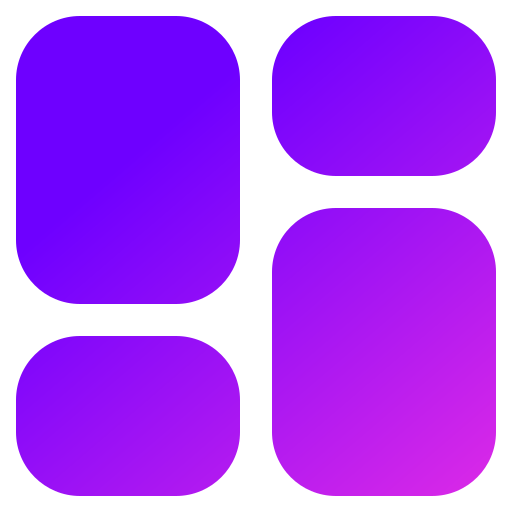

Reparación de PCs
Diagnostico y reparación de hardware y software
Mantenimiento
Limpieza, optimización y actualización
Soporte Remoto
Asistencia técnica a distancia
Redes
Instalación y configuración de redes

Reparación de computadoras, soporte técnico y mantenimiento para hogares y empresas
Diagnostico y reparación de hardware y software
Limpieza, optimización y actualización
Asistencia técnica a distancia
Instalación y configuración de redes
En TechFix nos dedicamos a ofrecer servicios de soporte técnico integral, mantenimiento preventivo y soluciones de red con los más altos estándares de calidad. Nos define la rapidez de respuesta, la honestidad en cada diagnóstico y el compromiso con la eficiencia de tus herramientas digitales. Conectamos experiencia y tecnología para que tú nunca dejes de avanzar.